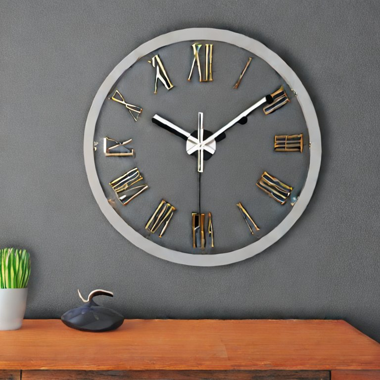
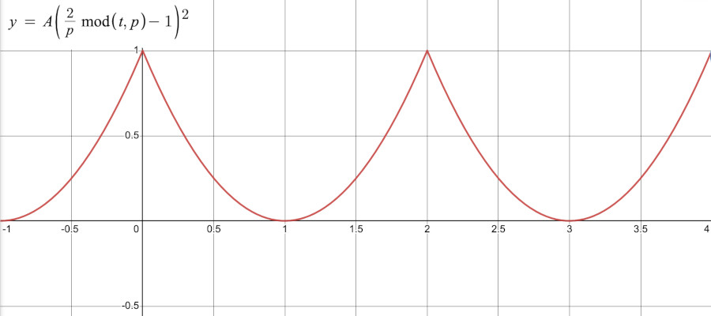
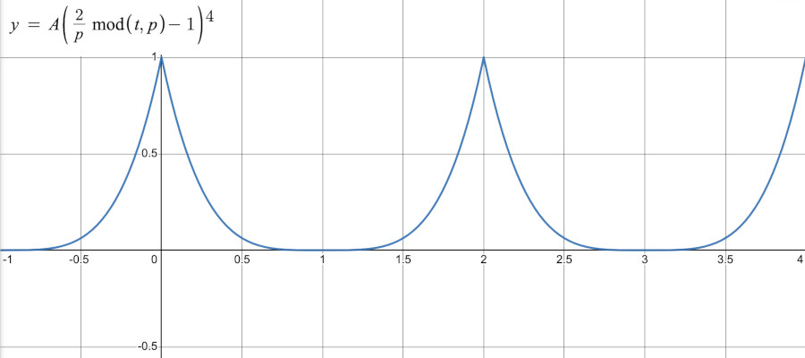

We’ve seen how to loop through elements and repeat code execution using for() loops. That structure is good for when we have repetitions with a well-defined beginning and an end, but sometimes we might want to repeat some computation or action for an indefinite amount of time with a certain rhythm or frequency. So… cycles.
One of the simplest ways to create a cycle is to think of a way to periodically reset a variable that just grows and grows. Think of the way an analog clock works: time just keeps going forward and growing, but the longer arm of the clock comes back to its beginning position every \(60\) minutes, and the shorter arm resets every \(12\) hours:

Before we create any cycles, let’s just visualize a variable that keeps growing and growing in p5.js: frameCount. This variable keeps track of how many times the draw() function has executed during the execution of our program.
In our sketch we are using it to set the horizontal position of the circle, but since frameCount grows unbounded, the x position will also keep growing and eventually the circle leaves the screen.
Now, let’s turn this variable that grows and grows and grows into a cyclic variable that repeats with a certain frequency.
We just saw how to do this using the modulo operator (%), but let’s review.
Since we want to create a sequence that repeats after width elements, like: \([0,1,2,...,width - 2,width - 1, 0,1,2,...,width - 2,width-1, 0,1,...]\), we can just use the remainder of the natural numbers when they are divided by width. And in our case, using p5.js, the frameCount variable gives us a sequence of the natural numbers.
In this example, the width number is acting as the amplitude of our cycle (how far the circle goes before it repeats), and there’s no offset to its starting position, but we could add one:
Now, this circle moves a distance of \(\frac{width}{2}\) pixels, starting at \(\frac{width}{4}\), so the amplitude of this cycle is \(\frac{width}{2}\) and its offset is \(\frac{width}{4}\).
We can always make it move faster by multiplying the frameCount variable by a constant, so that instead of growing by \(1\) it grows by \(2\) or by \(3\), etc.
This is good, but sometimes it’s useful to control the frequency of a repeating action using actual time units, like: seconds, milliseconds or minutes. And in our code, even though we can control how often the action repeats, it’s not clear how to change it if we want to, for example, make the action repeat every \(1\) second or \(2\) seconds or \(15\) seconds.
In order to do that in this case, we need to keep track of how often our frame is updating in terms of seconds, and more generally, we need some way to define the period of our repetition in terms of seconds.
Let’s start by creating a variable called periodSec that keeps track of how often we want to repeat our action (in seconds), and since we are updating our sketch every frame, let’s calculate how often we repeat our action in terms of frames, using our frameRate:
period is the number of frames our action will last before it repeats. frameRate can be obtained in p5.js using the getTargetFrameRate() function.
Now, we can think about the speed of our circle in units of \(\frac{pixels}{frames}\) as:
\[speed = \frac{amplitude}{periodFrames}\]And its location:
\[x = frameCount \times speed\]Putting that in the code with the modulo and the offset, we get:
Now, the reason why it’s advantageous to express our cycles in terms of amplitude, period and offset is because we can easily find other equations for repetitive motion that are expressed in those terms.
Like this equation for a triangle wave from wikipedia that defines a triangle wave of period \(p\) that spans the range \([0, 1]\) as:
\[x(t) = 2 \left\lvert\frac{t}{p} - \left \lfloor \frac{t}{p} + \frac{1}{2} \right\rfloor\right\rvert\]The variable \(t\) is the one that keeps growing, which in our case is frameCount.
Now, we can easily translate that into p5js:
x = 2 * amplitude * abs(frameCount / periodFrames - floor(frameCount / periodFrames + 0.5));
We have to multiply by amplitude to turn the range \([0, 1]\) in the original equation into the range \([0, amplitude]\).
But that is the only change!
Besides that we just copied the equation from wikipedia and it works:
This works for any periodic functions that is expressed in terms of \(amplitude\), \(period\) and \(t\). We can easily turn them into p5.js code.
This equation, for example:

We just have to remember that \(t\) is our frameCount and \(mod()\) is the % operator, and this becomes:
x = amplitude * (2 * (frameCount % periodFrames) / periodFrames - 1) ** 2;
And this:

becomes:
x = amplitude * (2 * (frameCount % periodFrames) / periodFrames - 1) ** 4;
Next, we’ll take a look at some periodic functions from trigonometry. They’re so common and useful that they get their own page.